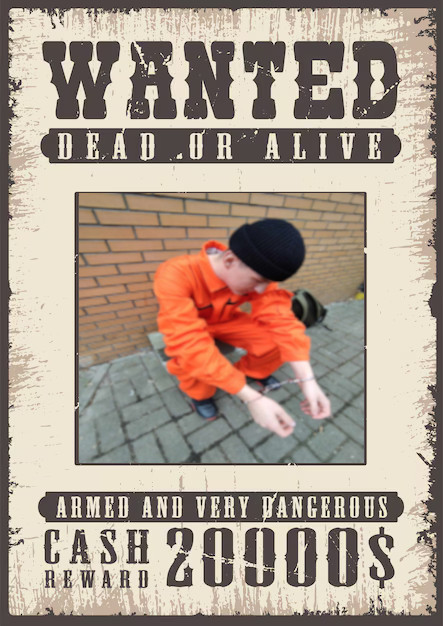
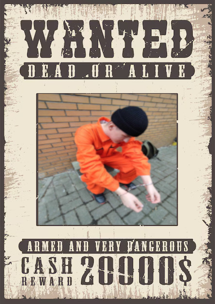

Jestem poszukiwany
W tamtym roku udało im się mnie schwytać.
W tym roku możesz się przyczynić, abym znów został schwytany.

Uczeń klasy 4B
Cześć, jestem Krystian i jestem uczniem klasy 4B.
Już od roku uczęszczam do samorządu szkolnego, starając się urozmaicić życie w naszej szkole — a wiem, że czasem te dni potrafią być naprawdę nudne.
Jestem osobą sumienną oraz pomocną. Nie boję się żadnych nowych wyzwań — wręcz przeciwnie, lubię zawieszać sobie poprzeczkę nieco wyżej.
Praca w grupie nie jest mi straszna, ponieważ lubię współpracować z ludźmi.
Swoją osobą staram się wprowadzać przyjemną atmosferę w grupie i żartować w wolnych chwilach, żeby poprawiać innym humor.
Działanie na rzecz szkoły sprawia mi przyjemność i chciałbym kontynuować przynależność do samorządu.
Ale bez Ciebie i Twojego głosu może mi się to nie udać.
Twój głos ma znaczenie.
W tamtym roku udało im się mnie schwytać.
W tym roku możesz się przyczynić, abym znów został schwytany.
